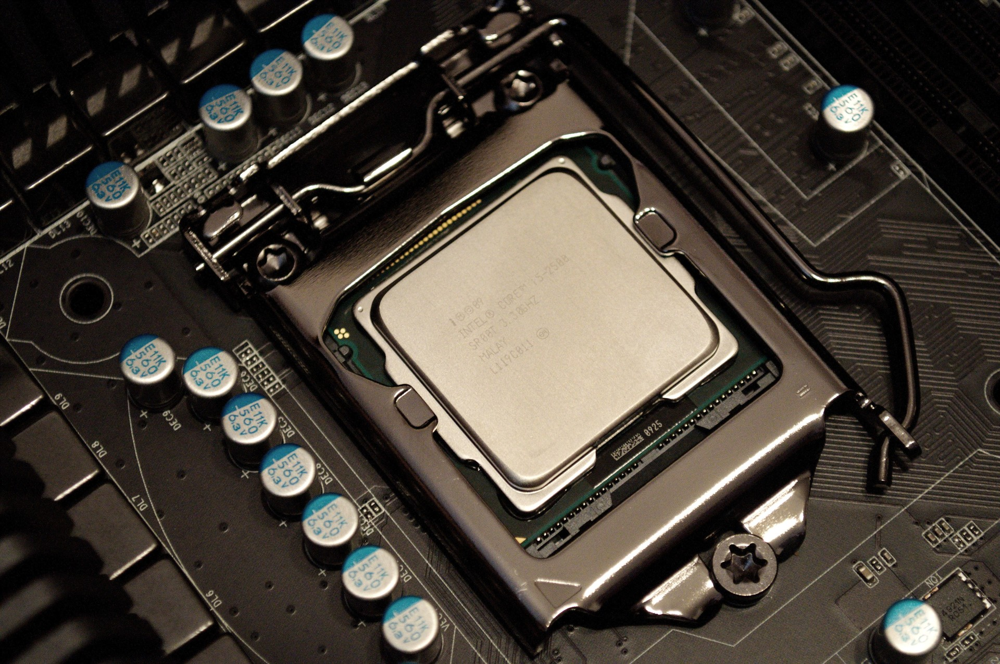

國立臺北科技大學 電資學士班
主修 Majors
| 電機工程 | 理論與實際並重，教學與研究範圍涵蓋電力工程、電力電子、控制系統、通訊系統、計算機系統五大領域，以培養能執行電機工程相關領域設計與應用之人才為目標。 |
| 電子工程 | 發展重點涵蓋計算機工程、無線通訊與訊號處理、電波工程及積體電路與系統等四大領域，並強調計算機、通訊與訊號處理、電波及積體電路設計等技術之整合與應用。 |
| 資訊工程 | 發展重點以「多媒體系統」、「網路系統」與「軟體系統」等三大特色研究領域為核心，發展兼具實用性與前瞻性的資訊科技，以培養能直接投入資訊產業的科技人才為教學目標。 |
| 光電工程 | 發展重點以「充實光電理論基礎、研習光電應用技術、培育實用光電技術人才，配合產業界需求」為宗旨，課程與教學範圍規劃以光電產業方面技術及人力需求為依據。 |
電機工程
Electrical Engineering
電力與能源專業領域
電力系統穩定度、電力事故分析、保護協調、電力自由化、電力品質、負載管理、新能源科技、接地系統、奈米科技、電力工程智慧型控制、智慧型電機控制驅動系統、智慧型網路控制應用、馬達故障偵測、無線感測器網路應用、電力數位訊號處理、軌道機電系統等。
電力電子專業領域
電子電路設計、電力電子IC 設計、PC 電源技術、通訊電源技術、變頻器及相關應用技術、電磁干擾防制、DSP 晶片應用技術、燃料電池及其應用、馬達控制與設計、機電整合等。
控制專業領域
智慧型控制、智慧型運輸系統、節能控制、3C 整合控制技術、馬達與運動控制、智慧型控制、智慧型運輸系統、節能控制、3C 整合控制技術、馬達與運動控制、DSP 晶片控制技術、視覺伺服控制、機器人控制與應用、視覺檢測與監控、尖端控制理論與應用等。
通訊專業領域
行動無線通訊系統、光纖通訊、展頻通訊、編碼及消息理論、影像與視訊處理、語音處理、音訊處理、適應訊號處理、多媒體通訊、高速光纖網路、行動無線網路視訊網路、網際網路、IP-Based 網路等。
計算機專業領域
IC 設計、多媒體與網路結合、資訊檢索、智慧型代理人、網路可靠度分析、遙測監控系統、圖形辨識、電子設計自動化、嵌入式系統等。
電子工程
Electronic Engineering/p>
計算機工程
含軟體、硬體、韌體、人機介面、單晶片處理器、微電子應用、資訊家電、嵌入式系統、視覺影像處理、醫電工程、行動計算、無線感測網路、嵌入式生醫系統設計、非同步邏輯技術、VLSI 系統設計、微處理機系統、多媒體通訊及多媒體晶片系統設計等。
通訊與訊號處理
含無線展頻通訊、行動通訊、信號處理、語音信號處理、語音/ 語者/ 語言辨認、語音合成、電腦輔助語言學習、語音資訊檢索、音訊處理與音樂資訊檢索、多用戶通訊、基頻通訊電路架構設計、消息理論、錯誤更正與編解碼及區域網路應用等。
電波工程
含數值電磁、高頻電路、天線、電波傳播、無線通訊電磁應用、高速數位傳輸技術、高頻自動量測應用、射頻與微波積體電路設計、微波零組件、射頻收發系統及無線生醫感測等。
積體電路與系統
含VLSI 設計、數位通訊晶片設計、類比積體電路設計、混合訊號積體電路設計、電源管理IC 設計、射頻積體電路設計、生醫積體電路設計、數位多媒體晶片設計、Hard IP 設計、Soft IP 設計、電腦輔助設計自動化、軟硬體共同設計、FPGA 系統設計與驗證、SOC 系統設計、微波與毫米波積體電路設計、儀控電路系統設計、半導體元件模擬及模型等。
教學型實驗室
微電腦週邊實驗室、電子電路實驗室、微算機與數位系統實驗室、通訊系統實驗室、高頻電路實驗室、晶片系統實驗室。
研究型實驗室
醫電工程實驗室、網路應用實驗室、嵌入式生醫系統實驗室、多媒體通訊實驗室、多媒體系統實驗室、網路暨嵌入式系統實驗室、情境感知應用實驗室、行動通訊實驗室、傳輸技術實驗室、無線區域網路實驗室、數位通訊實驗室、多媒體訊號處理實驗室、語音信號處理實驗室、行動智慧型網路實驗室、射頻電路與天線實驗室、微波與無線零組件實驗室、無線通訊實驗室、電磁波實驗室、微波積體電路實驗室、電磁最佳化實驗室、類比積體電路實驗室、超大型積體電路設計實驗室、軟硬體共同設計實驗室、無線生醫電路實驗室、系統整合實驗室、無線通訊積體電路實驗室、前瞻奈米暨綠能元件實驗室。

資訊工程
Computer Science and Information Engineering
多媒體系統
在多媒體系統方面主要著重於多媒體系統與傳輸、嵌入式系統與穿戴式技術、電腦圖學與資料可視化等研究，主題包含視訊編碼與傳輸技術、智慧聯網電視、電腦視覺技術、汽車電子與視覺安全輔助系統、嵌入式系統、穿戴式裝置、電腦動畫、電腦遊戲、虛擬實境、人機介面、建模技術等。
網路系統
網路相關專業師資主要研究包括無線及寬頻網路系統、網際網路應用、社群網路與資料探勘及管理等主題，核心技術涵蓋行動計算、感測網路、物聯網、光學網路架構、寬頻無線通訊網路架構、網路資源配置、雲端運算、資料管理、App 行動應用、資料探勘、社群網路分析、適地性服務等。
軟體系統
軟體系統的相關研究則是著重在軟體技術與分散式計算兩大主軸，主題有軟體工程、敏捷流程、軟體設計、軟體開發、軟體測試、電腦遊戲、雲端測試服務、服務導向計算、行動計算、資訊安全、人工智慧、智慧型代理人、智慧型分散式系統、大數據、資料分析等。
教學型實驗室
創新多媒體教學實驗室、智慧終端與嵌入式系統教學實驗室、應用軟體教學實驗室。
研究型實驗室
智慧型系統實驗室、應用計算實驗室、軟體系統實驗室、視訊編碼與傳輸實驗室、軟體開發與測試實驗室、音訊信號處理實驗室、互動多媒體圖學實驗室、無線與寬頻網路實驗室、網路資訊檢索實驗室、多媒體資訊與技術整合實驗室、軟體工程實驗室、網際網路應用與服務實驗室、計算機圖學實驗室、軟體測試工廠。

光電工程
Electro-optical Engineering
光通訊
光通訊領域主要專注於光纖接取網路、半導體光電元件與光電訊號處理之研究。其中主題包括微波光纖通訊/ 無線通訊整合傳輸系統、可見光通訊系統、光纖微波傳輸系統、分波多工被動光纖網路、光纖有線電視系統、長波長單光子元件與應用、全光訊號處理、多重服務光接取網路。
顯示科技
本研究群主要研究液晶平面顯示器、雷射投影以及有機發光元件等相關技術，除了探討關鍵零組件之光電與物理特性，並改良現有顯示器的顯示品質以及開發新穎的顯示模式，也與現有的顯示產業合作來研發有價值的專利與技術，並預測顯示產業的發展趨勢。
光學工程
光學工程研究學群以幾何光學、波動光學、雷射物理及奈米光學等基礎理論，搭配光學設計、光學薄膜、精密量測、生醫工程與光纖雷射等關鍵技術，研發LED 照明及短脈衝雷射等先進光源，並且開發薄膜光學元件、光學干涉術量測及奈米生醫等新興光電系統。本研究群亦積極提供台灣光電產業所需之各式先進光電技術的諮詢服務。
光電材料與元件
本研究群的研究聚焦在高效率太陽能電池、固態照明元件、積體光電元件、奈米材料的製程與光電特性。其研究主題包括：有機與無機太陽能電池之研製、奈米結構綠能光電元件、尖端材料與元件製程、光學微共振腔元件、表面電漿共振元件、半導體合金與雜薄膜之製程開發與檢測等。
教學型實驗室
物理實驗室、光電共同教學實驗室、光電教學實驗室、光電設計與模擬教學實驗室。
研究型實驗室
光纖通訊系統實驗室、光電精密量測實驗室、繞射光學暨光資訊處理實驗室、有機半導體元件實驗室、生醫奈米光學實驗室、光子技術實驗室、液晶非線性光學實驗室、積體光電實驗室、光學系統設計實驗室、光纖與雷射光學研究室、光通訊與綠能光電元件實驗室、液態晶體實驗室、顯示與雷射應用實驗室、光學薄膜實驗室、光電物理實驗室、薄膜與奈米材料實驗室、光電產業趨勢與技術創新實驗室、半導體材料暨光電元件製程實驗室。